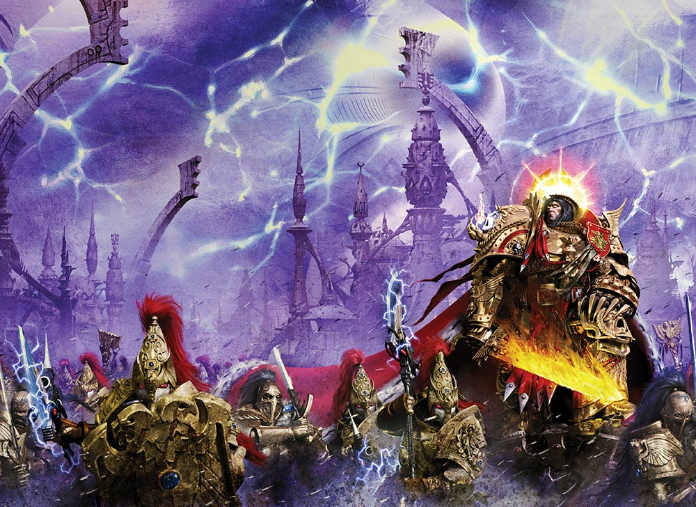

THE MASTER OF MANKIND

Author: Aaron Dembski-Bowden
Format: Novel
As Horus’s rebellion spreads across the galaxy, the Emperor remains beneath His Palace on Terra, consumed by a secret project now under threat. The Custodians, Sisters of Silence and Mechanicum fight a hidden war while humanity’s enemies draw closer.
Introduction reviewed against Black Library’s description on 2026-09-27. The publisher page may contain spoilers.
Publication facts: publisher source, checked 2026-09-26.
Open this work in the interactive Archive to track reading progress and explore related works.